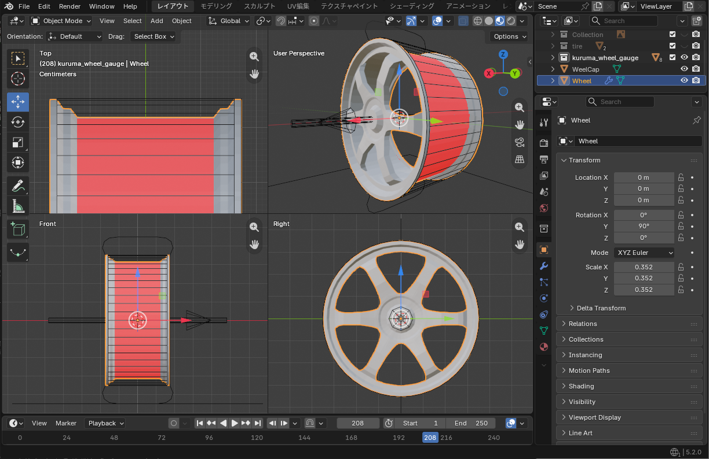
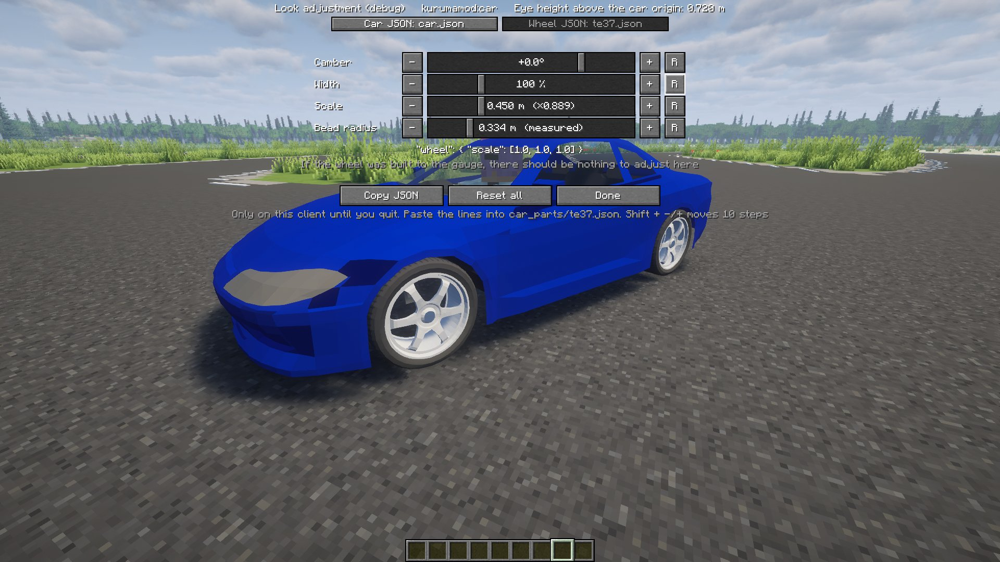

The wheel model, and turning it into a part players can pick.ホイールのモデルと、換装画面で選べる部品にする方法。
カーパックでホイールを用意しなければ、KurumaMod 標準のホイール（TE37）が自動で付きます。このガイドは、自分でホイールをデザインしたい人のためのものです。
If your car pack has no wheel of its own, KurumaMod's standard wheel (the TE37) is fitted automatically. This guide is for those who want to design their own wheel.
ホイールを Blender で作り、OBJ に書き出すまでです。ホイールは車体とは別のファイルで作ります。
This chapter takes a wheel from Blender to an exported OBJ. Wheels are built in a separate file from the body.
Scripting タブで modeling_tools/blender_wheel_gauge.py を実行する。寸法は同梱の TE37 に合わせてあり、リムの外形（半径 0.352m・幅 0.32m）・デザイン面の限界・嵌まるタイヤの断面（外径 0.45m）・車軸の線・地面・表を示す矢印が置かれる。リムは外形の円柱の中へ収めるassets/mypack/models/entity/my_wheel.obj（.mtl も一緒に）と assets/mypack/textures/entity/my_wheel.pngこれで、ホイールのモデルができました。換装画面で選べるようにするのは 2 章、自分の車に最初から履かせるのは下の「自分の車に最初から履かせたい」です。
modeling_tools/blender_wheel_gauge.py from the Scripting tab. Sized after the bundled TE37, it places the rim envelope (0.352 m radius, 0.32 m wide), the limit for the design face, the section of the tyre that fits on it (0.45 m outer radius), the axle line, the ground and an arrow marking the outer face. Keep the rim inside the envelopeassets/mypack/models/entity/my_wheel.obj (with its .mtl) and assets/mypack/textures/entity/my_wheel.pngThe wheel model is done. To make it selectable in the parts screen, go to chapter 2; to fit it to your own car from the start, see "Fit it to my own car" below.
ホイールを部品にして（2 章）、車の諸元の JSON data/mypack/cars/<車>.json の default_parts で指します。換装画面ではこれが「純正」になります:
{
"values": { ... },
"default_parts": { "wheel": "mypack:my_wheel" }
}data/mypack/car_parts/my_wheel.json に "cars": ["mypack:<車>"] を書くvehicles/）にはホイールのモデルを書かない。ホイールの項目は何も書かない（タイヤの位置は諸元のトレッド・ホイールベースが決める）Make the wheel a part (chapter 2) and point to it from default_parts in the car's spec JSON data/mypack/cars/<car>.json. It becomes "Stock" in the parts screen:
{
"values": { ... },
"default_parts": { "wheel": "mypack:my_wheel" }
}"cars": ["mypack:<car>"] to the part file data/mypack/car_parts/my_wheel.jsonvehicles/). No wheel entries go there at all (the spec's track and wheelbase decide where the wheels sit)大きさは自由です。作った半径（m）を、ホイールの見た目のファイル assets/mypack/car_parts/my_wheel.json（2 章）の wheel の中に "designRadius" で書きます。ゲームは、この値と車のタイヤ半径の比で拡大して描きます。書かなければゲージの 0.45 とみなします。
"wheel": { "model": "mypack:models/entity/my_wheel.obj",
"texture": "mypack:textures/entity/my_wheel.png",
"designRadius": 0.30 }ゲーム内の調整画面でタイヤ半径を変えると、見た目もそのまま追従します。タイヤは接地したまま、車体だけが上がります（リフトアップ）。
Any size is fine. Write the radius you built at (in m) as "designRadius" inside wheel in the wheel's looks file assets/mypack/car_parts/my_wheel.json (chapter 2). The game scales the mesh by the ratio between this value and the car's tyre radius. Left out, it is taken as the gauge's 0.45.
"wheel": { "model": "mypack:models/entity/my_wheel.obj",
"texture": "mypack:textures/entity/my_wheel.png",
"designRadius": 0.30 }Change the tyre radius in the in-game tuning screen and the model follows: the tyres stay on the ground and the body rises (a lift-up).
何も書かなければ、KurumaMod の TE37（部品の id は kurumamod:te37）が純正になります。
Write nothing: KurumaMod's TE37 (part id kurumamod:te37) is the stock wheel.
リムもタイヤも、ビードからビードまでの幅を同じ 0.32m（ゲージの円柱）で作る約束になっています。だから、どのリムにどのタイヤを嵌めても幅が合います。
以前は、ホイールにタイヤも一緒に作り、名前を Tire にする作り方でした。この作り方のホイールも読めますが、tire で始まる名前のオブジェクトは描かれず、選んだタイヤ（選んでいなければ KurumaMod 標準のタイヤ）が嵌まります。付属のタイヤの内径は、タイヤを嵌める位置としてだけ使われます。
Rims and tyres are both built to the same 0.32 m bead-to-bead width (the gauge cylinder). So any tyre fits any rim.
Wheels used to be built with their own tyre as a separate object named Tire. Such wheels still load, but objects whose name starts with tire are not drawn; the picked tyre (or KurumaMod's standard tyre) is fitted instead. The built-in tyre's inner edge is only used to place the fitted tyre.
Ctrl+G の「ホイールの JSON」で、乗ったまま動かせます。手順は2 章の「ゲームの中で調整する」にあります。タイヤの位置（幅・前後）は諸元のトレッド・ホイールベースで決まるので、調整画面（G）で動かします。
The "Wheel JSON" tab of Ctrl+G moves them while you sit in the car. The steps are in "Adjust it in game" in chapter 2. Wheel position (width, front to back) comes from the spec's track and wheelbase, so move those in the tuning screen (G).
wheel の中に designRadius を書いていない（または作った半径になっていない）.mtl を置いていないか、マテリアルが無い。形が正しければ問題ない（色の付け方は車の 4 章）designRadius inside wheel (or it is not the radius you built at).mtl, or no material. Harmless if the shape is right (colouring is in chapter 4 of the Car guide)作ったホイールを、ゲームの換装画面で選べるようにします。見た目だけの部品で、走りは変わりません。
Make your wheel selectable in the in-game parts screen. It changes the looks only; driving stays the same.
assets/mypack/models/entity/my_wheel.obj と assets/mypack/textures/entity/my_wheel.png に置いたとするdata/mypack/car_parts/my_wheel.json（ファイル名が部品名）:
{ "slot": "wheel" }assets/mypack/car_parts/my_wheel.json（部品と同じファイル名）。ゲージどおりに作ったなら、大きさは書かなくてよい:
{
"wheel": {
"model": "mypack:models/entity/my_wheel.obj",
"texture": "mypack:textures/entity/my_wheel.png"
}
}"part.mypack.my_wheel": "マイホイール"これで、ゲームの G →「パーツ」→「ホイール」のタブに並びます。
assets/mypack/models/entity/my_wheel.obj and assets/mypack/textures/entity/my_wheel.pngdata/mypack/car_parts/my_wheel.json (the file name is the part name):
{ "slot": "wheel" }assets/mypack/car_parts/my_wheel.json (same file name as the part). If you built to the gauge, there is no size to write:
{
"wheel": {
"model": "mypack:models/entity/my_wheel.obj",
"texture": "mypack:textures/entity/my_wheel.png"
}
}"part.mypack.my_wheel": "My Wheels"It now appears under G → "Parts" → the "Wheels" tab.
できあがりの形:
What you end up with:
mypack.jar
├── assets/ ← 見た目
│ └── mypack/
│ ├── car_parts/
│ │ └── my_wheel.json ← 見た目のファイル（"wheel" の中）
│ ├── lang/
│ │ ├── en_us.json ← "part.mypack.my_wheel"
│ │ └── ja_jp.json
│ ├── models/
│ │ └── entity/
│ │ ├── my_wheel.obj
│ │ └── my_wheel.mtl
│ └── textures/
│ └── entity/
│ └── my_wheel.png
└── data/ ← 素性
└── mypack/
├── car_parts/
│ └── my_wheel.json ← 部品のファイル（"slot": "wheel"）
└── cars/
└── <車>.json ← 純正にするなら default_parts.wheel（任意）mypack.jar
├── assets/ <- looks
│ └── mypack/
│ ├── car_parts/
│ │ └── my_wheel.json <- looks file (inside "wheel")
│ ├── lang/
│ │ ├── en_us.json <- "part.mypack.my_wheel"
│ │ └── ja_jp.json
│ ├── models/
│ │ └── entity/
│ │ ├── my_wheel.obj
│ │ └── my_wheel.mtl
│ └── textures/
│ └── entity/
│ └── my_wheel.png
└── data/ <- what it is
└── mypack/
├── car_parts/
│ └── my_wheel.json <- part file ("slot": "wheel")
└── cars/
└── <car>.json <- default_parts.wheel to make it stock (optional)assets/ と data/ の car_parts/ に、同じファイル名で 1 つずつ置きます。
One file each in the car_parts/ folders of assets/ and data/, with the same file name.
見本パックの sample_wheel が、この形そのものです。
The example pack's sample_wheel is exactly this setup.

blender_wheel_gauge.py）に重ねたところ。リムが円柱の中に収まり、両端のフランジが円柱の端の面に来ています。原点は車軸の中心（リムの幅の真ん中）、表は +X。センターキャップ（WeelCap）は別オブジェクトでかまいません。タイヤは作らず、ゲームが嵌めますblender_wheel_gauge.py). The rim sits inside the cylinder, with its flanges on the cylinder's end faces. The origin is the axle centre (the middle of the rim's width) and the face points to +X. The centre cap (WeelCap) may be a separate object. No tyre is modelled; the game fits one.キャンバー・太さの最初の値や、タイヤの嵌まり具合は、ゲームの中で見ながら決められます。JSON を書き換えて読み直すのを繰り返す必要はありません。
The starting camber and width, and how the tyre sits on the rim, can be set while watching in game. No need to keep editing the JSON and reloading.
この調整は、ゲージ（blender_wheel_gauge.py）どおりの大きさで作られなかったメッシュのためのものです。ゲージに収めて作ったホイールなら、スケールもビード半径もそのままで標準のタイヤがぴったり嵌まります。キャンバーと太さは好みの最初の値を決めたいときだけ動かします。
This is for meshes that were not built at the gauge's size (blender_wheel_gauge.py). A wheel kept inside the gauge takes the standard tyre exactly with the scale and bead radius left as they are. Move camber and width only if you want different starting values.
my_wheel.json）が出るdesignRadius）。ゲージどおりに作ったなら 0.45 のまま"wheel" のブロックがコピーされるassets/mypack/car_parts/my_wheel.json の "wheel" のブロックと置き換えて貼る。F3+T で読み直して確かめるmy_wheel.json)designRadius). Leave it at 0.45 if you built to the gauge"wheel" block, model and texture included"wheel" block in assets/mypack/car_parts/my_wheel.json with it. Press F3+T to reload and check
見た目のファイル assets/mypack/car_parts/my_wheel.json の wheel に書きます。換装画面のスライダーの最初の位置になり、プレイヤーが「R」を押すとここへ戻ります。
{
"wheel": {
"model": "mypack:models/entity/my_wheel.obj",
"texture": "mypack:textures/entity/my_wheel.png",
"offset": [0.02, 0.0, 0.0],
"scale": [1.3, 1.0, 1.0],
"camber": -4.0
}
}offset … X だけ使う。外へ出す量 [m]（−0.05〜0.10）scale … X だけ使う。太さの倍率（0.5〜2.5）。Y・Z は 1.0 のままにする（変えると接地が崩れる）camber … キャンバー角 [度]。負で上が内側（−30〜10）Write them under wheel in the looks file assets/mypack/car_parts/my_wheel.json. They become where the parts-screen sliders start, and "R" returns to them.
{
"wheel": {
"model": "mypack:models/entity/my_wheel.obj",
"texture": "mypack:textures/entity/my_wheel.png",
"offset": [0.02, 0.0, 0.0],
"scale": [1.3, 1.0, 1.0],
"camber": -4.0
}
}offset — only X is used: how far out to push the wheel [m] (−0.05 to 0.10)scale — only X is used: width multiplier (0.5 to 2.5). Leave Y and Z at 1.0 (changing them breaks ground contact)camber — camber in degrees. Negative leans the top inward (−30 to 10)model と texture を書かなければ、その車のホイールのまま、書いた値だけが変わります。見本パックの deep_dish がこの形です。assets/mypack/car_parts/deep_dish.json:
{
"wheel": {
"scale": [1.6, 1.0, 1.0],
"camber": -12.0
}
}ただし、スライダーで作れる状態に名前を付けるだけになるので、ふつうはメッシュを持つホイールを作ります。
Leave out model and texture; the car's own wheel is kept and only the values you write change. The example pack's deep_dish works this way. assets/mypack/car_parts/deep_dish.json:
{
"wheel": {
"scale": [1.6, 1.0, 1.0],
"camber": -12.0
}
}This only names something players can already make with the sliders, so usually you would build a wheel with its own mesh.
data/mypack/car_parts/my_wheel.json の cars に車種の id を並べます。その車種の換装画面にだけ並びます。別のパックの車種を書いてもかまいません（kurumamod:car は KurumaMod の既定の車）。
{
"slot": "wheel",
"cars": ["mypack:kei", "mypack:kei_van"]
}List car ids in cars in data/mypack/car_parts/my_wheel.json. The part then appears only in those cars' parts screen. Cars from other packs are fine (kurumamod:car is KurumaMod's default car).
{
"slot": "wheel",
"cars": ["mypack:kei", "mypack:kei_van"]
}data/mypack/car_parts/my_wheel.json に order を書きます。小さいほど左に並びます（書かなければ 100）。
{
"slot": "wheel",
"order": 10
}Add order to data/mypack/car_parts/my_wheel.json. Smaller numbers sit further left (100 if left out).
{
"slot": "wheel",
"order": 10
}いまはできません。4 輪とも同じ部品を履きます。
Not possible yet. All four wheels wear the same part.
data/ 側のファイルが無いか、slot が書かれていない（ログに出る）。cars で絞っているなら、乗っている車種が入っているか見るassets/ 側のファイル名が data/ 側と違う。または "wheel": { ... } の中のキーの綴りが違うmy_wheel のまま出る … lang のキーが part.<パック>.<部品名> になっていないdesignRadius を書いていない（または作った半径になっていない）data/ file is missing, or has no slot (the log says so). If you use cars, check the car you are in is listedassets/ file name differs from the data/ one, or a key inside "wheel": { ... } is misspeltmy_wheel — the lang key is not part.<pack>.<part>designRadius (or it is not the radius you built at)見落としやすいところを並べます。症状が出てから探すときは配布の 3 章へ。
What is easy to miss. If something is already wrong, go to chapter 3 of Shipping.
data/<pack>/car_parts/<part>.json| キー | 型 | 既定値 | 意味 |
|---|---|---|---|
slot | 文字列 | 必須 | "wheel" |
order | 整数 | 100 | 換装画面に並ぶ順 |
cars | 車種 id の配列 | （すべての車種） | 付けられる車種。読める値が 1 つも無ければ、その部品は捨てられる |
data/<pack>/car_parts/<part>.json| Key | Type | Default | Meaning |
|---|---|---|---|
slot | string | required | "wheel" |
order | integer | 100 | Position in the parts screen |
cars | array of car ids | (every car) | Which cars can fit it. If none of the values can be read, the part is dropped |
assets/<pack>/car_parts/<part>.json（"wheel": { ... } の中。入れ子を省いて、いちばん外側に書いてもよい）| キー | 型 | 既定値 | 意味 |
|---|---|---|---|
model | id | その車の純正ホイールのもの | ホイールの OBJ |
texture | id | その車の純正ホイールのもの | ホイールのテクスチャ |
designRadius | 数字 | 0.45（ゲージ）。model を書かない部品はその車の純正ホイールのもの | メッシュが何 m の半径で作られているか。ゲージどおりなら書かない |
offset | [x,y,z] | その車の純正ホイールのもの（無ければ 0） | 平行移動 [m]。X は外向き。X はオフセットのスライダーの既定値（−0.05 〜 0.10。外れたら端へ丸める） |
scale | 数字 1 つ or [x,y,z] | その車の純正ホイールのもの（無ければ 1） | X は太さ（スライダーの既定値。0.5 〜 2.5 に丸める）。Y・Z は触らない |
camber | 数字 | その車の純正ホイールのもの（無ければ 0） | キャンバー角 [度]。スライダーの既定値（−30 〜 10 に丸める） |
rimRadius | 数字 | （測る） | タイヤの内径（ビード）を置く半径 [m]（メッシュの寸法）。タイヤの 1 章 |
assets/<pack>/car_parts/<part>.json (inside "wheel": { ... }, or at the top level without the nesting)| Key | Type | Default | Meaning |
|---|---|---|---|
model | id | the car's stock wheel's | Wheel OBJ |
texture | id | the car's stock wheel's | Wheel texture |
designRadius | number | 0.45 (the gauge). A part without model takes the car's stock wheel's | The radius the mesh was built at, in m. Leave it out if you followed the gauge |
offset | [x,y,z] | the car's stock wheel's (0 if none) | Translation [m]. X points outward; it is the offset slider's default (−0.05 to 0.10, clamped) |
scale | one number or [x,y,z] | the car's stock wheel's (1 if none) | X is width (the slider's default, clamped to 0.5–2.5). Leave Y/Z alone |
camber | number | the car's stock wheel's (0 if none) | Camber [degrees]. The slider's default (clamped to −30 to 10) |
rimRadius | number | (measured) | Radius where the tyre's bead sits [m], in mesh units. Tyre guide, chapter 1 |
data/<pack>/cars/<car>.json のいちばん外側| キー | 型 | 意味 |
|---|---|---|
default_parts.wheel | 部品 id | その車の純正のホイール。書かなければ kurumamod:te37 |
data/<pack>/cars/<car>.json| Key | Type | Meaning |
|---|---|---|
default_parts.wheel | part id | The car's stock wheel. Left out, kurumamod:te37 |
KurumaMod — 諸元の全項目は車の付録 A。ゲージスクリプトは modeling_tools/blender_gauge.py・modeling_tools/blender_wheel_gauge.py・modeling_tools/blender_tire_gauge.py。
KurumaMod — every spec key is in Appendix A of the Car guide. The gauge scripts are modeling_tools/blender_gauge.py, modeling_tools/blender_wheel_gauge.py and modeling_tools/blender_tire_gauge.py.